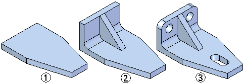

Feature modeling
Feature modeling is the process of constructing parts in Solid Edge. Two modeling environments exist for creating features. You can create a model using synchronous features only, ordered features only, or a combination of synchronous and ordered features.

You begin the modeling process in Solid Edge by constructing a base feature (1). You then complete the model by adding material to (2) or removing material from (3) the previous features.

If you use the same shape as the base feature for many parts, you may want to store it in a template so that you can reuse it easily.
Feature-based workflow
Solid Edge provides a feature-based modeling workflow for construction of features. A wide range of feature types are provided to making modeling parts easy and intuitive.
-
Sketch-based features, such as extruded and revolved features that add or remove material based on a sketch you draw.
-
Manufactured features, such as hole features, where you can define feature parameters such as size, depth, countersink, or counterbore.
-
Treatment features, where you modify existing edges or faces, such as round, add draft, and thin-wall features.
To speed the synchronous feature modeling process, two methods are provided for constructing features: feature modeling commands or the Select tool. In either approach, the instructions in PromptBar guide you through the feature construction process.
The ordered feature modeling process uses only the feature modeling command approach.
-
Using feature modeling commands
Feature modeling commands provide a command-based workflow, based on the feature type you want to construct. The software guides you through the rest of the process, letting you know what type of input you must provide at each step. All synchronous and ordered feature modeling commands in Solid Edge support this workflow.
-
Using the Select tool (synchronous only)
For creating synchronous features that add or remove material by extrusion or revolution, the Select tool is the preferred approach. After you draw a valid sketch, you can use the Select tool to extrude or revolve a feature that adds or removes material based on cursor position or options you set. The Select tool approach reduces the number of steps required to construct these frequently-used features.
How do I
Select a featureLearn more
Constructing features using the feature construction commandsVent features